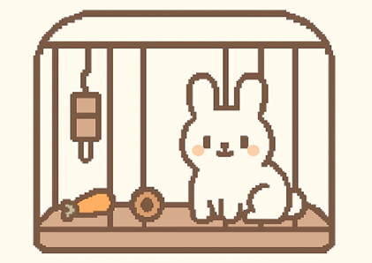
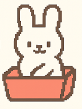

Housing & Hutch Size
A rabbit’s living space should be large enough for them to hop at least three times in a row and stretch out fully. For a rabbit around 5 lbs, a good enclosure size is about 4ft by 2ft. Rabbits should also be able to stand on their hind legs without hitting the top of the cage.
Avoid wire-bottom cages, as they can hurt your rabbit's feet. If wire is present, place a mat or solid floor panel on top to protect their paws.
Safety in the Home
Rabbits are natural chewers, so keeping wires out of reach is essential. You can lift cords off the floor, cover them with plastic tubing, or fence off areas to prevent chewing hazards.
Also, make sure any wood in their environment is untreated and not toxic. Avoid painted wood or species like cedar, birch, or yew, which are harmful to rabbits.
Exercise & Play
Rabbits need daily exercise to stay happy and healthy. Aim to give them at least a few hours of free-roam time in a safe space of at least 24 square feet.
The best time to let your bunny play is in the morning or evening, since rabbits are crepuscular and most active during dawn and dusk.
Cleanliness & Litter Training
Rabbits are naturally clean animals and can be litter trained just like cats. Provide a litter box in their enclosure and encourage consistent use by cleaning regularly and rewarding good behavior.
A clean habitat helps keep your rabbit healthy and reduces odors. Clean the litter box and replace soiled bedding often to maintain a tidy space.
